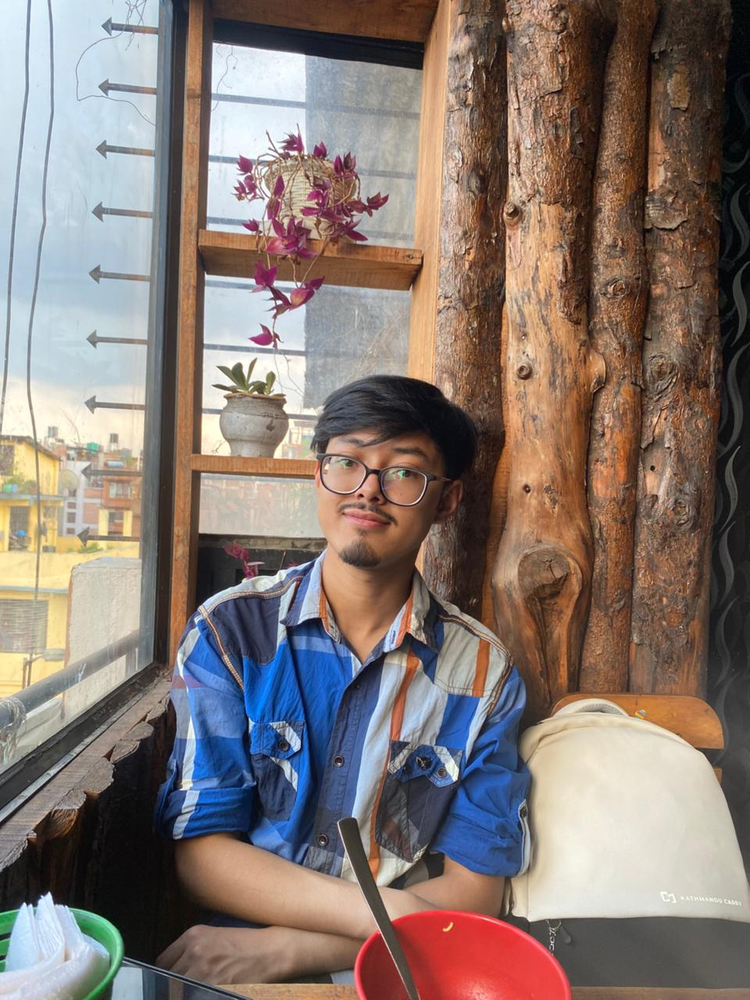

Responsive web projects
Developed and deployed user-friendly websites during training, applying responsive layouts, UI/UX principles, optimization and cross-browser compatibility.
I’m a Junior SEO Executive and BCA student combining search, web, data and design to create useful digital experiences and meaningful results.

Profile
I bring together technical problem-solving, visual communication and a growing foundation in data and digital work.
Motivated to turn ideas into work that improves engagement, communicates clearly and delivers meaningful results.
Selected work
Practical work across websites, academic data projects and e-commerce graphics, supported by a growing knowledge of SEO.
Developed and deployed user-friendly websites during training, applying responsive layouts, UI/UX principles, optimization and cross-browser compatibility.
Completed projects involving data cleaning, visualization, reporting and database management, applying BCA coursework to practical scenarios.
Produced banners, promotional creatives, product-listing visuals and social media graphics while maintaining consistent branding across platforms.
Applying keyword research, competitor analysis and on-page optimization to improve content relevance, clarity and discoverability.
Experience
A progression from web design and academic data work to graphic design, an SEO internship and my current Junior SEO Executive role.
Education
My studies in computer science and computer applications support my work across web development, data and visual communication.
Building practical knowledge across programming, web technologies, data analysis and database management through coursework and academic projects.
Completed higher-secondary science studies with a major in Computer Science.
Skills
Technical and creative tools supported by communication, teamwork, attention to detail and a willingness to keep learning.
Contact
I’m open to opportunities where I can contribute across web, data and design while continuing to learn and grow.